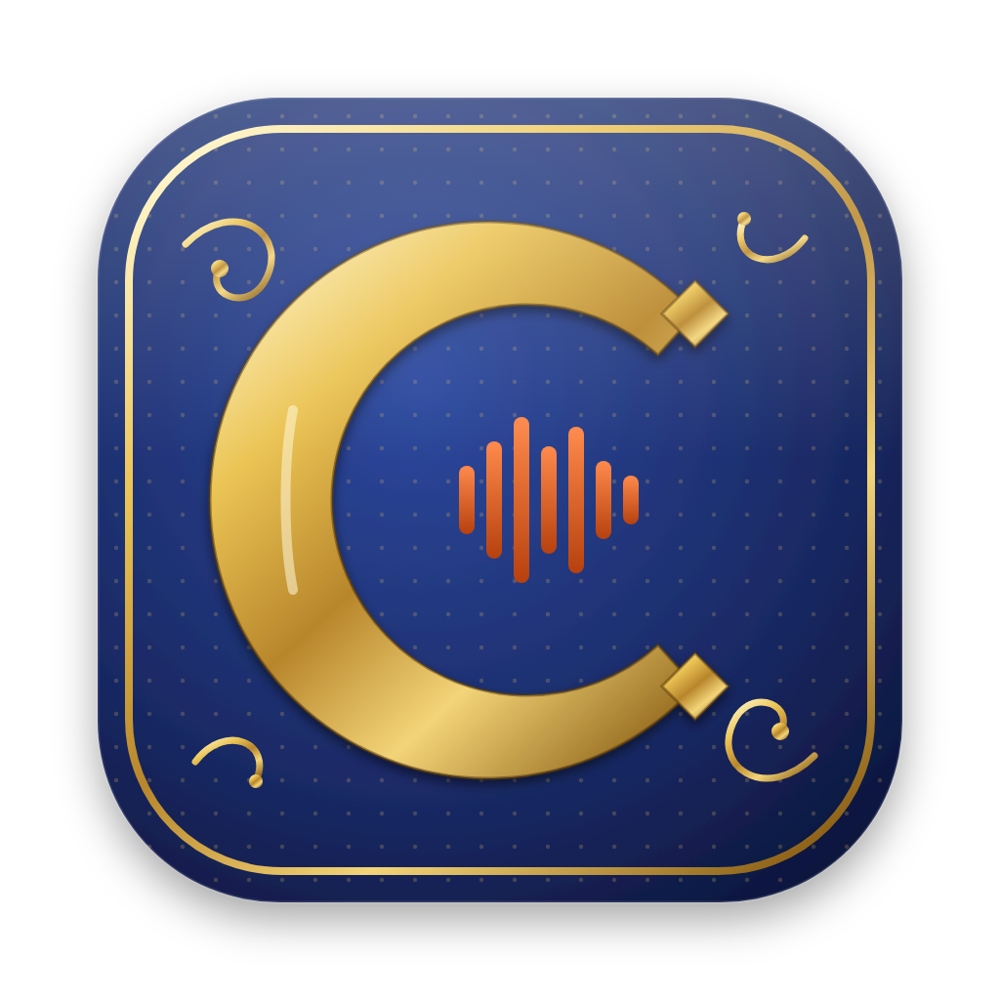

Press kit
Everything you need to write about Cantus. Use anything here freely. If something is missing, tell us.
In one paragraph
Cantus is a free, open-source digital audio workstation written in Rust and drawn by hand, in the tradition of FL Studio's workflow. It has an arrangement, a piano roll, a channel rack and a mixer; nine instruments and twenty-five effects of its own; hosting for CLAP and VST3 plug-ins; and export to WAV, FLAC, MP3 and Ogg. It needs no account and has no telemetry; the application is licensed GPL-3.0-or-later and its engine MPL-2.0. It is in public beta for Windows and Linux, with a macOS preview. Created by Luis Ángel Almazán.
In one line
A free, open-source DAW that helps you finish the song.
Facts
| Name | Cantus, from the cantus firmus, the fixed melody on which polyphony is built |
|---|---|
| Version | 0.1.0-beta.13 |
| Platform | Windows 11 (x64) and Linux (x86-64); macOS in preview |
| Language | Rust; interface in English and Spanish |
| Licence | Application GPL-3.0-or-later, engine MPL-2.0 |
| Audio | WASAPI and ASIO; a multicore real-time engine |
| Plug-ins | Hosts CLAP and VST3; its own effects also ship as CLAP and VST3 |
| Privacy | No account, no telemetry |
| Web | cantusdaw.com · cantusdaw.studio · github.com/luis314159/cantus-daw |
Logo



Please keep the logo's proportions and leave clear space around it of at least a quarter of its width. Do not recolour it or redraw its gold.
Colours and type
The type is Barlow Semi Condensed, under the SIL Open Font Licence. Gold is kept to fine marks and rules; lapis is the colour of what you press.
Pictures
The program: arrangement, mixer and inspector (WebP, lossless)Share image, 1200 × 630 (PNG)


Screenshots of the effects and the manual's pictures are in the repository.
Music
The six demo songs that ship with Cantus are made with its own instruments and effects. Excerpts can be heard in the player on the home page.
Contact
Luis Ángel Almazán — lalmazan.com.